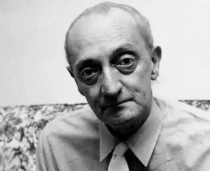
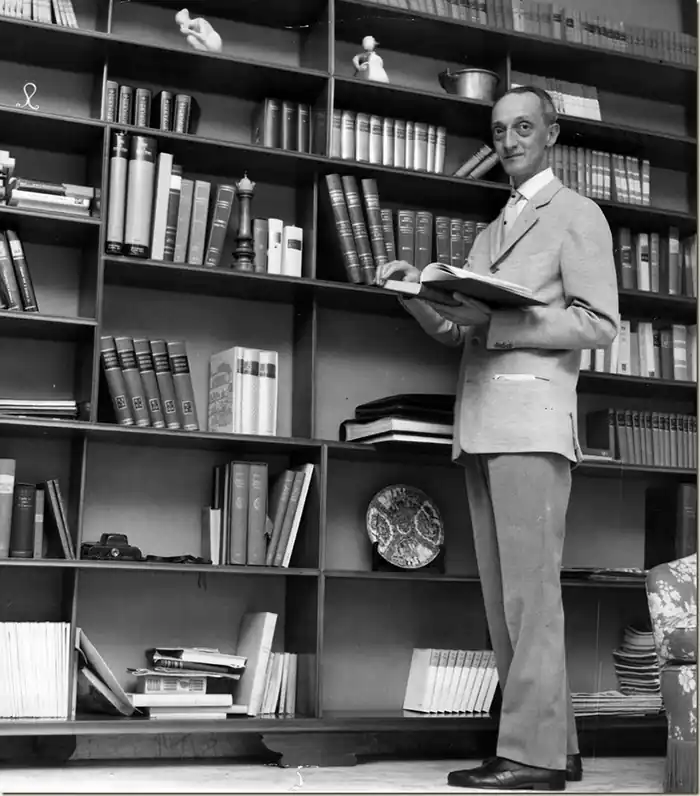
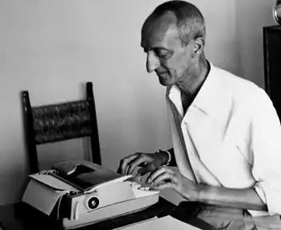

1911 — 1969
Щербаненко Джорджо
(1911, м. Київ — 1969, м. Мілан, Італія) письменник пригодницько-детективного жанру Володимир-Джордж Щербаненко — син українця й італійки, визнаний "італійським Сіменоном". Життя Володимира, який на новій батьківщині став Джорджо, було нелегким. Син українського офіцера, який загинув у вирі революційних подій 1917—1920 рр., разом з матір'ю поселився в Римі й прожив тут до 16-ліття. Потім був Мілан, де пройшла решта його життя. Перепробував багато професій: вантажник, різноробочий, рекламний агент, робітник друкарні… А ще — активний учасник поетичних вечорів, мистецьких свят, навкололітературно-го життя Мілана, де у той час жили й творили письменники та художники Еліо Вітторіні, Сальваторе Квазімодо, Еудженіо Монтале, Артуро Мартіні, Ренато Гуттузо. Щаслива зустріч з відомим письменником та кіносценаристом Чезаре Дзаваттіні, яка з часом перетворила нікому не відомого коректора в одного з найзнаменитіших італійських романістів, Метра популярного літературного жанру. Романи та збірки оповідань молодого письменника спочатку знайшли відгук у масового читача, насамперед, жіночої аудиторії. Він був плідним автором — щороку на полицях книгарень з'являлися з друку його нові й нові твори: "Зелена річка", "Ангел із пораненим крилом", "Йоганна, донька лісу", "Печера філософів", "Дівчина без кавалерів", "Ні сьогодні, ні завтра", "Кристина, якої не було", "Одне бажання", "Зустріч у Трієсті", "Ми вдвох і більше нікого", "Весільна подорож"… Перший період творчості Дж. Щербаненка — своєрідна реакція талановитого прозаїка на настрій, що визначав загальноіталійську літературну ситуацію доби Беніто Муссоліні, яку можна було б значною мірою сприйняти як вимушено космополітичну (чи аполітичну?). Щоправда, письменник ніколи не переходив межі, за якою б у його творчість проникли політика та гостре захоплення якоюсь ідеологією. Він писав про те, що цікавило всіх: життя в повоєнній постмуссолінівській Італії, трансформація Мілана з великого індустріального міста в мегаполіс і супроводжуючі все це соціально-психологічні процеси. Та, володіючи оригінальним літературним талантом, Дж. Щербаненко прагнув нових видноколів. Природжена спостережливість, сприйняття дійсності, як кажуть, оголеним нервом, логічне мислення, врешті багатий життєвий досвід та дар захоплюючого аудиторію оповідача вивели його на обшир пригодницької, детективної літератури. Тим більше, що в 50—60-ті рр. італійського масового читача, як, між іншим, і світового, цей жанр особливо приваблював. У 1955 р. книжковий магнат Мондадорі, розуміючи це, започаткував випуск масовими тиражами дешевої передплатної серії кримінальних романів. "Тривалий час нам постійно втлумачували, що нашим письменникам не до снаги створити детективний роман, дія якого відбувалася б в Італії, а героями були б італійці, — писала популярна газета "Стампа". — Джорджо Щербаненко блискуче спростував це твердження". Успіху романів та оповідань письменника сприяло його глибоке знання Мілана — північної індустріальної столиці Італії, в житті якого в архіскладному клубку переплелися безліч сучасних проблем міста-монстра: політичних, економічних, культурних. Підпільний бізнес, мафіозні угруповання, злочинність стали світом, який намагалися "відкрити й пізнати" італійські мас-медіа. Дж. Щербаненко-письменник сміливо поринає у новий для нього морально-психологічний світ: один за одним (починаючи з 1966) з'являються його романи "Приватна Венера", "У тенетах зради", "Юні бузувіри", "Пісок поглинає сліди", "Міланці вбивають по суботах" та ін. З книжок Дж. Щербаненка постав ще один привабливий образ — детектив Дука Ламберті. Це не примітивний сержант поліції, а талановитий слідчий (в минулому лікар), наділений культурою й високими професійними якостями. У 1969 р. одна з італійських газет назвала письменника "батьком італійського кримінального роману й водночас пророком: він раніше від усіх угадав, побачив і змалював зловісне обличчя Мілана — міста-велетня…". З раптовою смертю Майстра детективу з європейської літератури не зник образ слідчого-інтелектуала, започаткований Дж. Щербаненко. Він живе у творчості своїх талановитих послідовників, у знятих за його творами кінофільмах. Творча спадщина колишнього киянина складає понад 60 романів, кілька тисяч оповідань, низку кіносценаріїв, безліч статей, репортажів, рецензій. Його ім'я постійно на сторінках зарубіжних літературних енциклопедій.